Perceive
An overhead camera captures the workspace and detects pointing gestures.
ROBOTIC SPATIAL AI · ICRA 2027
Submitted to the IEEE International Conference on Robotics and Automation (ICRA 2027)
Desk-based learning and creative work benefit from handwritten engagement, yet AI guidance typically appears on a separate screen. We present AIfred, a desk-based robotic arm with a projector that places AI-generated guidance alongside handwritten work. AIfred combines workspace perception, context-aware content generation, and robot-mediated projection to support math, image-generation, and drawing tasks. In a study with 36 participants, AIfred performed comparably to laptop-based ChatGPT during a math assignment and improved short-term learning transfer after assistance was removed. Independent art and design professors ranked AIfred-assisted drawings best in 33 of 36 cases.
People think, solve problems, and make things at a physical desk. Screen-based AI asks them to move between that work and a separate digital space.
AIfred projects context-aware support back into the workspace, keeping the guidance close to the task.
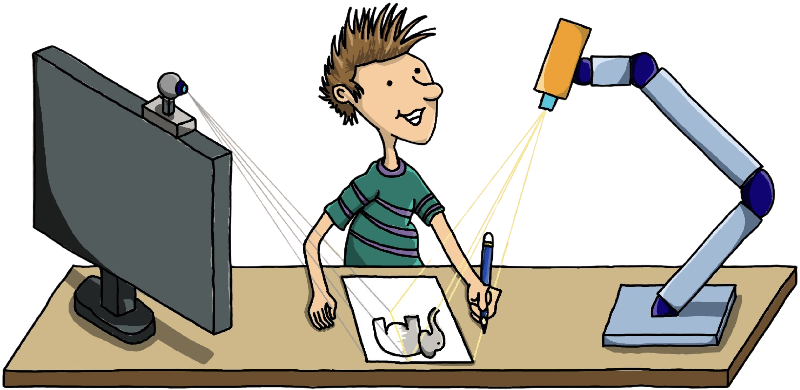
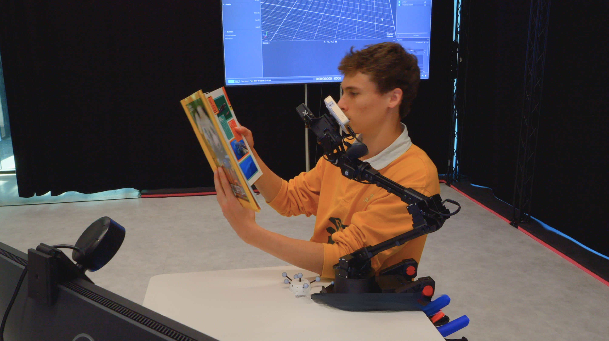
AIfred turns a physical task into spatially aligned assistance through three stages.
An overhead camera captures the workspace and detects pointing gestures.
A multimodal model interprets the scene and creates task-relevant guidance.
A tracked robotic arm places the guidance beside the user's work.
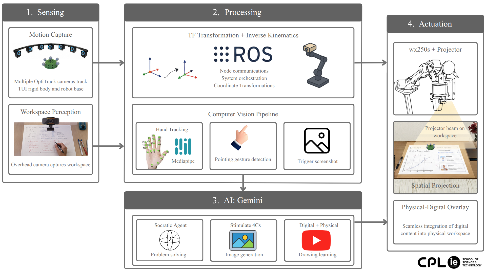
A robotic arm carries a mini projector. An overhead camera observes the desk, while motion capture tracks a user-moved marker to position projected content.
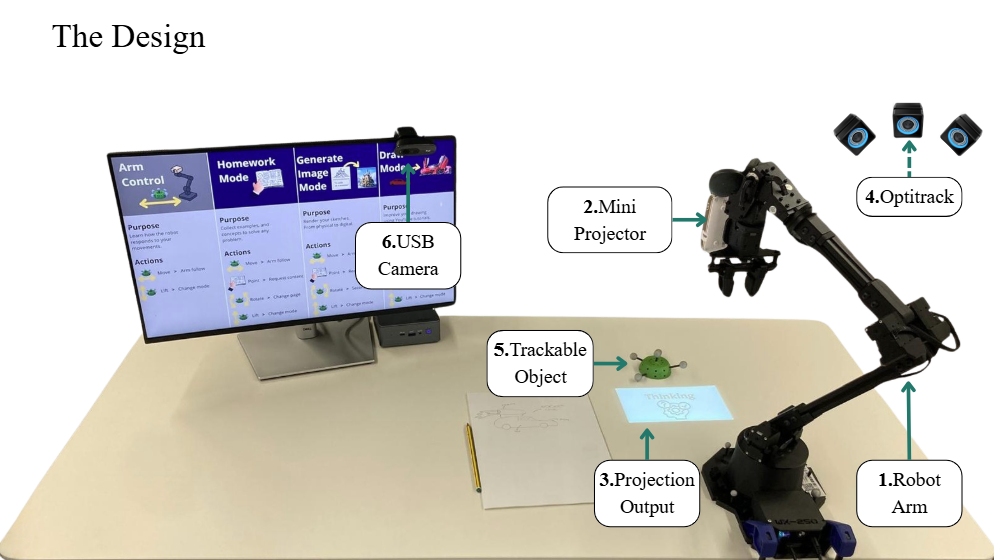
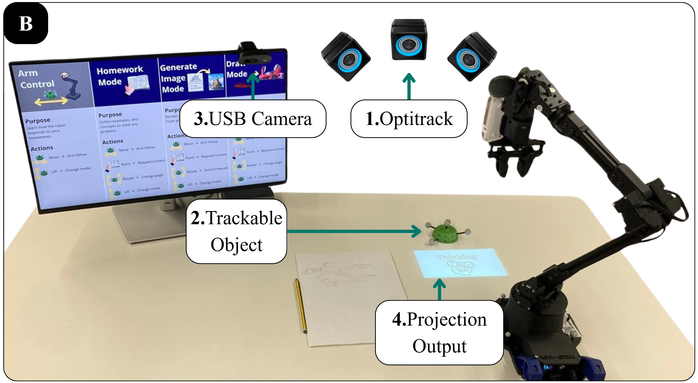
The camera captures the task and pointing gesture; a multimodal model generates relevant support; the robot projects it beside the work. AIfred supports homework, image generation, and drawing.
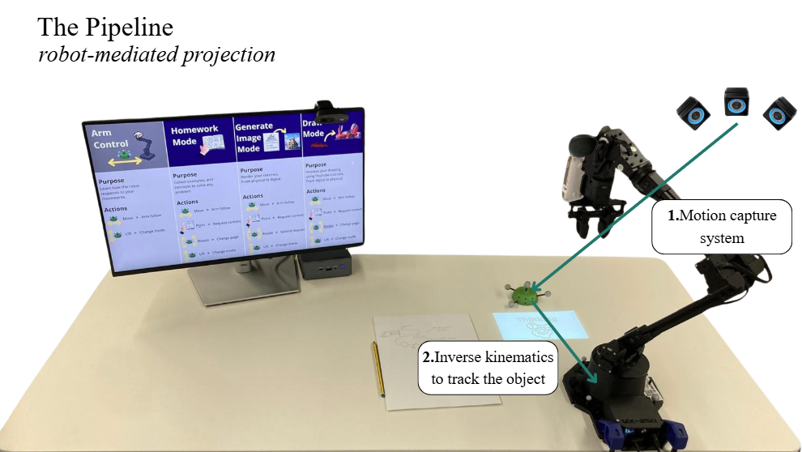
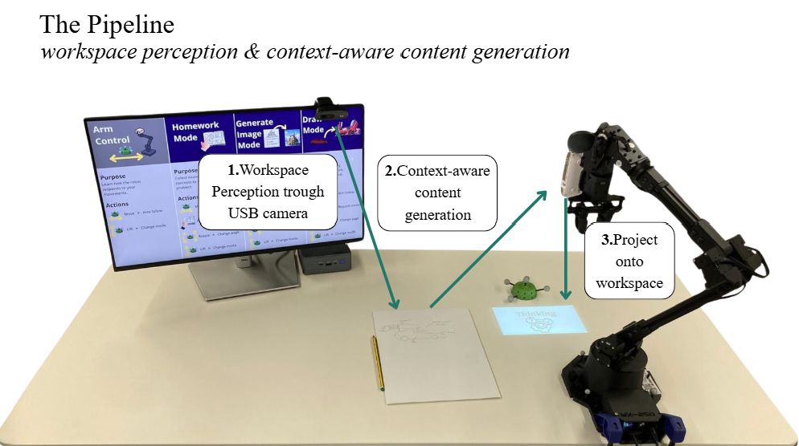
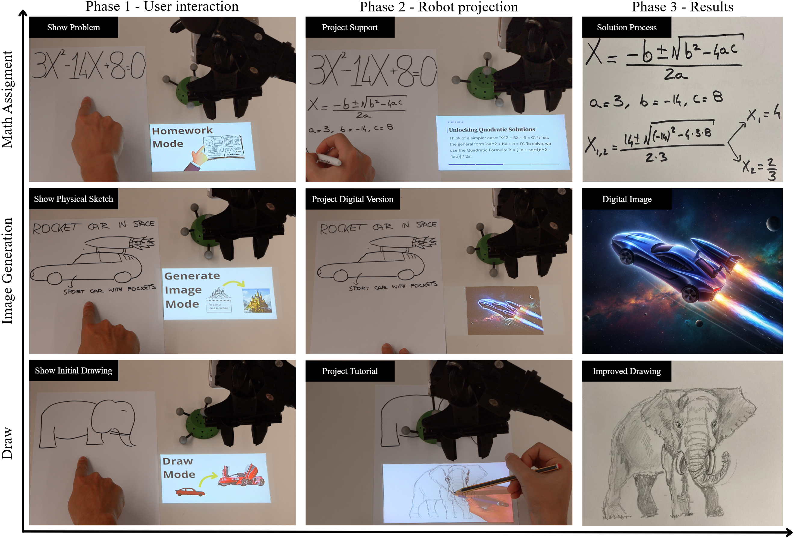
Drag each divider to compare the task input with AIfred's visual output.
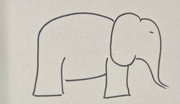
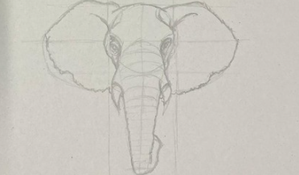
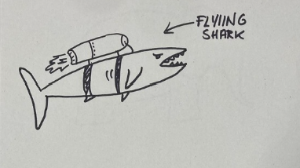
INPUTAIFRED36 participants compared AIfred with ChatGPT (GPT-5.6 Luna) on a laptop across math, image-generation, and drawing tasks.
After assistance was removed: 7.0/10 with AIfred vs. 4.4/10 with ChatGPT (p = .003).
Independent art and design professors preferred AIfred-assisted drawings.
6.7/10 with AIfred vs. 7.3/10 with ChatGPT (p = .41).